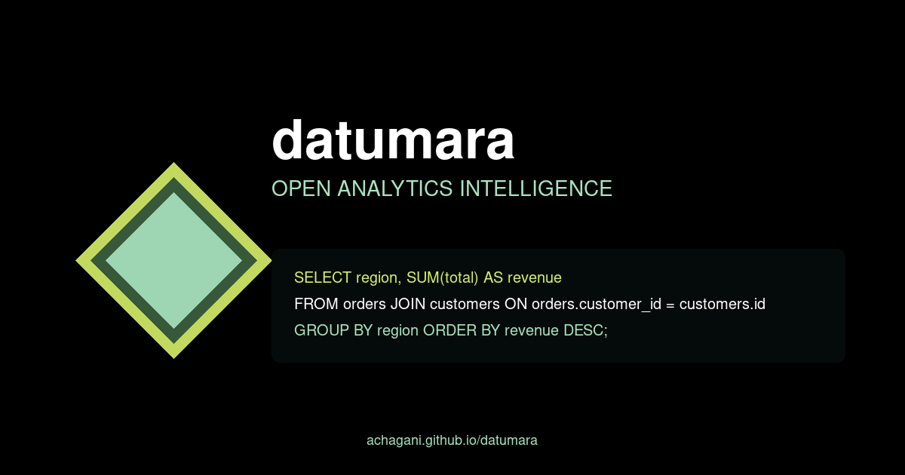

An open-source analytics language model: business questions in, schema-aware SQL and decision-ready answers out — running where the data actually lives.

Every company has the same bottleneck: the distance between a business question and its answer is an analyst's backlog. Generic text-to-SQL tools don't fix it — they guess at schemas they don't know and produce queries that look right and are subtly wrong. And frontier cloud models can't help where it matters most, because the schema and the data can't leave the building. What's missing is a small model, trained on the pairing that actually matters — question ↔ schema ↔ query — that runs locally, next to the warehouse.
Datumara fine-tunes a 3.5B-parameter base model (Qwen2.5) on the Spider text-to-SQL corpus,
augmented to roughly 7,000 examples, with a split of 60/20/20 for train/validation/test. A
complexity classifier routes queries by difficulty so training focuses capacity where errors
cluster, and a hard-example mining loop feeds the model's own failures back into the next round.
LoRA adapters keep training cheap enough to iterate on a single GPU. The finished model exports
straight to Ollama: ollama pull datumara-local and one command gets you from install
to answering questions against your own schema.
The training pipeline is a set of composable scripts: train.py with YAML config
presets for model sizes (3.5B/7B/13B), hyperparameters, and LoRA settings;
evaluate.py and benchmark_baseline.py for measuring against the
un-fine-tuned baseline; compare_models.py for side-by-side runs; and
poc_verification.py as the end-to-end gate. Docker images with GPU support make the
whole thing reproducible on a fresh machine. It's early — but the skeleton of a serious analytics
model product is there, and it runs entirely on your side of the firewall.